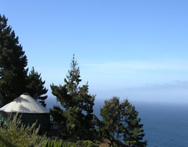

Pacific Trails Resort
The Yurts at Pacific Trails

- What is a yurt?
- They are permanent structures four feet off the ground. Each yurt has canvas walls, a wooden floor and a roof dome that can be opened.
- How are the yurts furnished?
- Each yurt is furnished with a queen-size bed down quilt and gas-fired stove. It includes electricity and a sink with hot and cold water. Shower and restroom facilities are located in the lodge.
- What should I bring?
- A sense of adventure and some time to relax! You should also pack comfortable walking shoes and plan to dress for changing weather with layers of clothing.